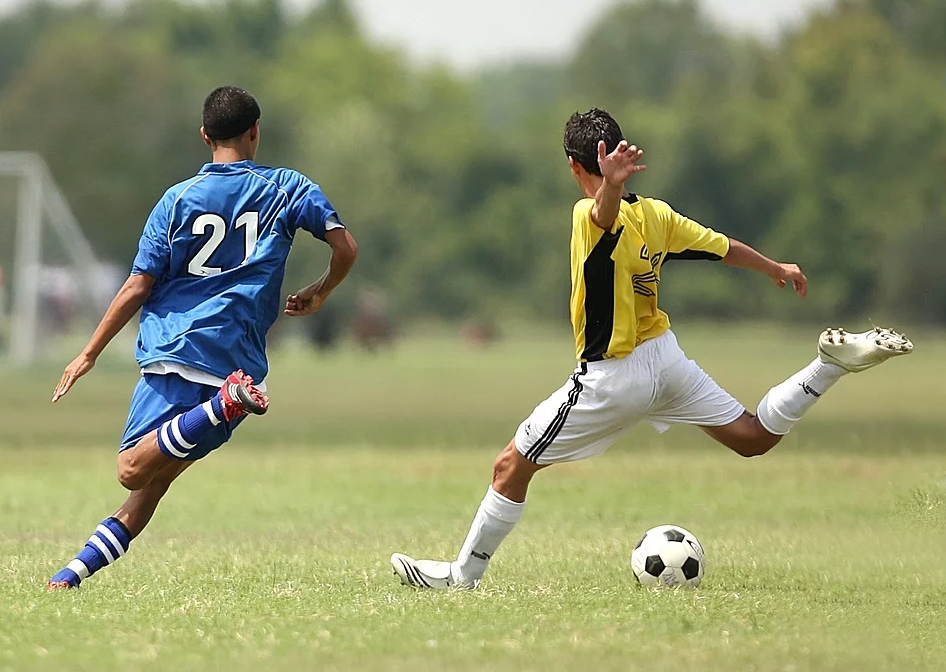
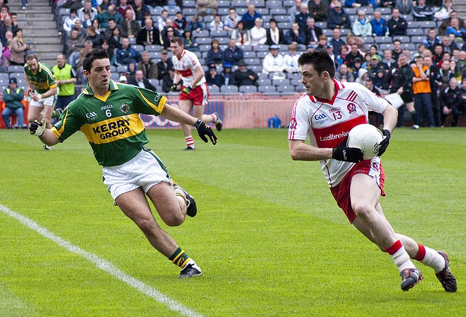
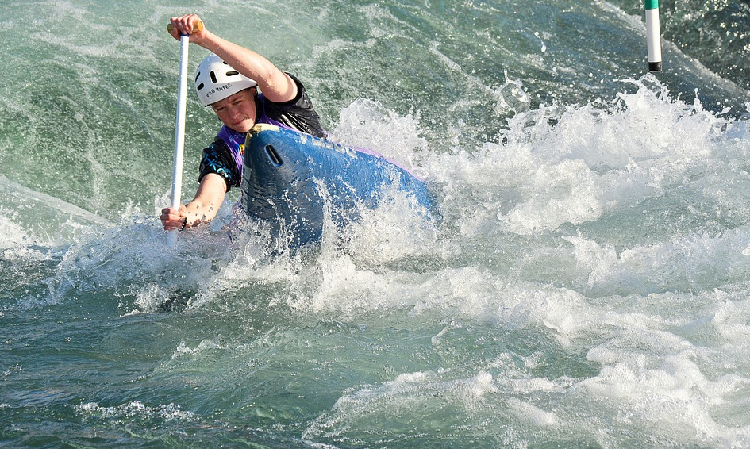
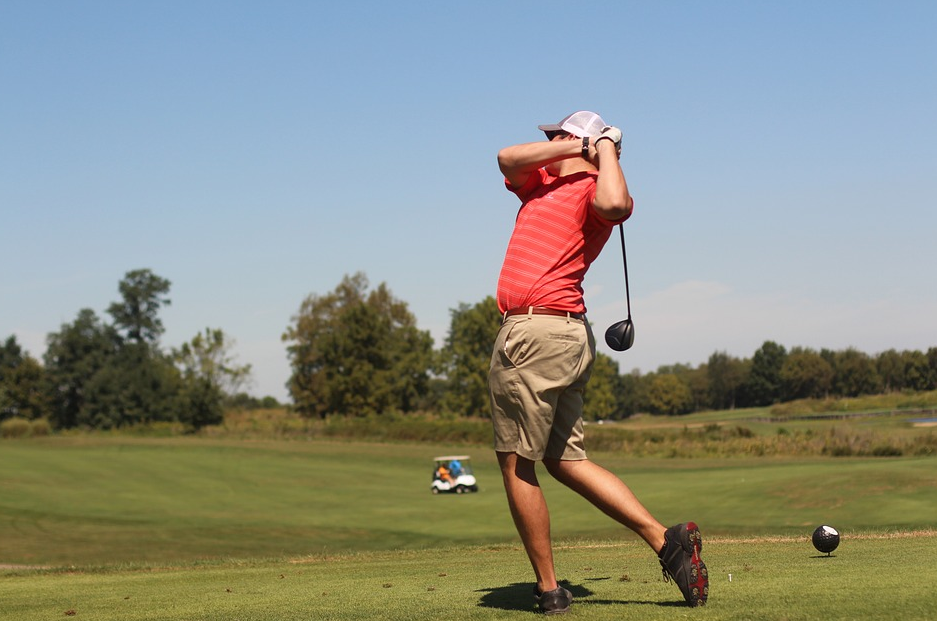

When traveling to a new place, one always wonders what they can do to make their experience memorable. We have an answer for you: sports!
The Irish have a deep love of sports, and the situation is no different in Dublin. The most popular games in the city are soccer, rugby and Gaelic football. The latter is a cross between rugby and soccer, and it attracts quite a considerable following. There is also hurling which is quite similar to lacrosse. However, this sport does not have as much audience as the previous three. For individual games, golfing takes the lead followed closely by water sports.
Soccer
If you are a soccer fan, you are set to have a great time in Dublin where there is always something exciting happening in this regard. If you take a look at the rankings in Ireland, you will see that Dublin has at least five teams at the top. One such organization is Shelbourne football club which has its base at Tolka Park. Another great team is Bohemians Football club with its headquarters in Dalymount Park. Other great teams are St Patricks Athletic football club based in Richmond Park, Shamrock Rovers football club and Dublin City with its base at Home Farm. It will also please you to know that the Irish national soccer team has some of its training sessions in the city. Other than watching players go about their matches, you too can participate in soccer. By looking into the 5-a-side options available in the town, you can get to be part of a team and show everyone what you’ve got. It should be lots of fun!
Gaelic football
Not many people have heard of Gaelic sports, and as such, you may get confused as to what the play is. It is a hybrid between rugby and soccer, so you get to combine the best from the two sports, thus ending up with a fascinating game. The ball is round. However, the goal posts look like those you would find in a rugby match. When it comes to the gameplay, you can choose to kick, throw or carry the ball and thus there are many ways in which you could win the game.
Football falls into the category of Gaelic sports and is one of the most popular games in the city. Hurling is also loved, and it is more of playing field hockey in mid-air. Gaelic football and hurling are very popular in the northern side of Dublin, and they fall under the jurisdiction of the Gaelic Athletic Association. For league matches, the Dublin team plays at Parnell Park, and you can catch a game or two when you are in town. When it comes to championship matches, you will find the team in Drumcondra. Many local organizations in the city can introduce you to either of these sports. Get to play football the Irish way! It is an experience that you will not forget.
Rugby
While north-siders are all about hurling and Gaelic football, people living in the south have a love for rugby. As such, you will find that most rugby teams have their bases here at Ballsbridge and Donnybrook. One of the most famous clubs in this regard is the Dublin University. Interestingly, this club holds a title as one of the oldest rugby clubs in the world. How cool would it be to see where legends train for the upcoming matches? The only way to find out is by visiting their home-ground. Rugby matches take place at the clubs’ pitches. The Irish Rugby Football Union works to promote the sport by helping people take part in it. As such, if you would like a go at it, you can reach out to one of their teams on the same.
Watersports
Are you more into sports played on water as opposed to those that take place on land? In Dublin, you can always count on the wind to help you in sailing as well as kite surfing. There are many coasts and slips from where you can enjoy watersports. If you have not taken part in any of these sports before, there are various clubs offering training on the same to both kids and adults. You can also rent a yacht and set sail to enjoy the beauty of this region.
Golfing
With twenty-nine major golf courses spread across the county, you will have quite a thrill when practicing your swing. What’s more, most of these golf courses are picturesque owing to their proximity to natural features such as the sea and forests. You can also arrange for golf lessons if you wish to get some training on the same.Whether you wish to participate in sports or are looking to catch an exciting game, Dublin has lots in store for you. The golf game has historical value for the irish people. If you want to learn more about traditions and history check out. Bring on the energy and get ready to have lots of fun!